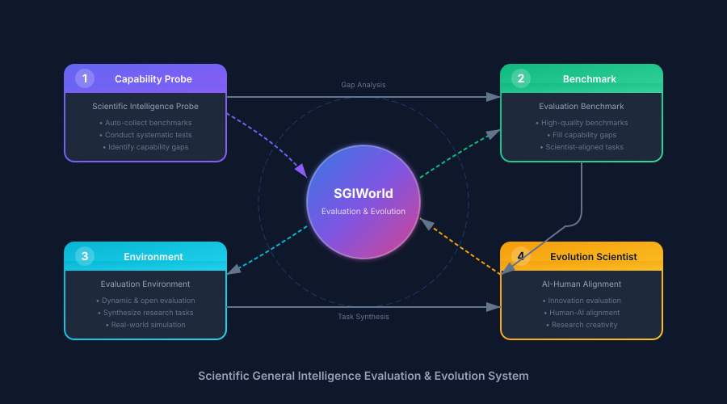

Comprehensive Evaluation & Evolution System for AI-Driven Scientific Discovery
Building a comprehensive framework to evaluate and advance AI systems capable of genuine scientific discovery — from hypothesis to validation, from computation to experimentation

科学智能能力体系探针
Automatically collect and analyze existing benchmarks, conduct systematic tests, and identify missing capabilities in current AI systems.
科学智能评测基准
Establish high-quality, scientist-aligned benchmarks to fill identified capability gaps with rigorous evaluation tasks.
科学智能评估环境
Dynamic and open evaluation platform that can synthesize any research tasks for comprehensive capability assessment.
科学智能进化科学家
Evaluate research innovation and creativity, aligning AI evaluation with human scientific judgment and discovery standards.
Evaluating AI agents on complete research workflows: from literature review, hypothesis generation, experimental design, to result analysis and paper writing — measuring true autonomous research capability.
Bridging computational (dry lab) and experimental (wet lab) validation. Our benchmarks assess AI's ability to close the loop between in-silico predictions and real-world laboratory verification.
Moving beyond narrow benchmarks to evaluate AI's potential for groundbreaking scientific discoveries — the kind of creative, cross-disciplinary thinking that leads to transformative advances in human knowledge.
SGIWorld provides a comprehensive suite of benchmarks designed to evaluate AI systems across the full spectrum of scientific capabilities — from knowledge understanding to autonomous research execution.
Benchmarks co-designed with domain scientists to ensure real-world relevance and scientific rigor
Spanning physics, chemistry, biology, materials science, and cross-disciplinary challenges
Complete research workflow assessment from literature review to experimental validation
Real-time tracking of model performance with detailed breakdowns by capability